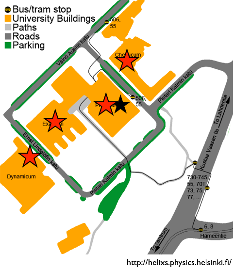

Who are you?
- Name
- Home university & program
- Status (Ph.D. student, MSc, etc.)
- Thesis topic
- Experience with coding and/or modelling
Time to pair up
- Before you get too comfortable please find a partner to work with for the rest of the course
- Ideal partnership: A stronger coder/modeller with someone with less coding/modelling skill
- Groups of 3 are possible, but only if needed
Lunch

- You can get a full hot lunch
- Across the street in the Chemicum
- In the basement of the Exactum next door
- Slightly further away in the Dynamicum (pricier, but a bit better).
- The Unicafe (coffee/tea spot) also has sandwiches/paninis